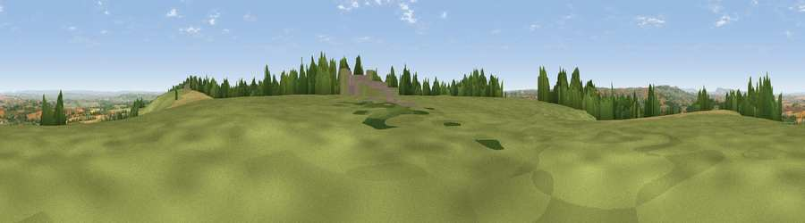

Viewpoint near Chaffcombe
#12109 in England · top 27% of its area beats it · near ChaffcombeThe view, rendered

A 360° render of this exact spot computed from the terrain model, tree cover and land cover — summer colours, afternoon light, calibrated against photographs of famous viewpoints. Real trees, hedges and buildings will differ in detail.
The panorama
Grey silhouette: terrain skyline in each direction (720 bearings, Earth curvature and refraction included). Dashed green: skyline with trees (+15 m) and buildings (+8 m) as obstacles. Blue strip: how far the ground is visible on each bearing.
Where the view opens
Wedge length = distance to the farthest visible ground on that bearing (vegetation-aware). Rings at 10, 25 and 50 km.
What fills the view
61% grassland · 23% cropland · 12% woodland · 3% built-up
Angular shares of the visible panorama (visual magnitude), not map area. Landscape diversity 0.44 (0–1 Shannon).
Key numbers
More beautiful places nearby
The staircase of upgrades: each row has a higher view potential than everything closer. Driving times are estimates from straight-line distance, calibrated against real road routing — check an actual route before setting out.
| Place | Direction | Drive | Score |
|---|---|---|---|
| Viewpoint near Dowlish Wake | E · 1 km | ~3 min | 70.0 |
| Viewpoint near Hewish | ENE · 3 km | ~8 min | 73.5 |
| Viewpoint near Hewish | E · 4 km | ~8 min | 78.5 |
| Viewpoint near Burstock | SSE · 9 km | ~18 min | 81.8 |
| Lewesdon Hill | SE · 11 km | ~20 min | 83.3 |
| Viewpoint near North Chideock | SSE · 18 km | ~31 min | 87.1 |
| Golden Cap | SSE · 18 km | ~31 min | 88.7 |
| The Knoll | SE · 27 km | ~43 min | 91.0 |
50.88177, -2.89584 · source: screening · position refined by local search. Computed location — check access rights before visiting.